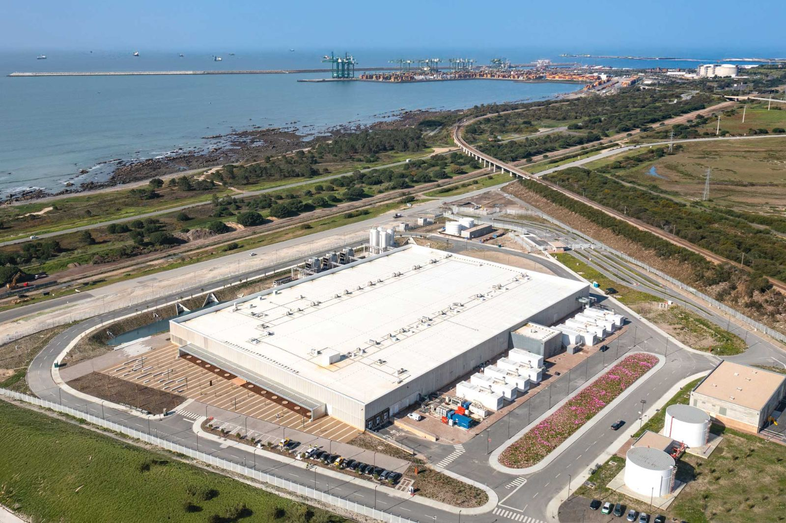

Um orçamento base em horas, com a vossa tabela, o vosso catálogo e a vossa margem.
Uma plataforma feita à medida da Campitubos que lê o pedido, cruza o desenho com as listas, liga cada linha às vossas referências e propõe tempos, equipas e preço. A decisão final continua a ser do José e do Martinho.
Em duas semanas no email de orçamentos. Respondidos: uma fração mínima.
No pedido que nos enviaram, num só email ao projetista. Outras 6 resolvemos lendo o desenho.
Ligadas ao vosso catálogo, com o código da referência e os minutos da vossa tabela.

Seis coisas que o José e o Martinho nos disseram
9 em cada 10 pedidos ficam sem resposta
Não por falta de interesse: por falta de capacidade. 36 pedidos em duas semanas, perto de 70 por mês.
"Esta semana temos 30 e tal pedidos, que podia ser 20 milhões."
Metade dos preços está na cabeça do José
De quatro pessoas a orçamentar passaram a duas e meia. O que não está no Excel está na experiência de mais de 20 anos.
"Queria passar isto para uma base de dados."
Excel e PHC, à mão
Preços de fornecedores que mudam, mão de obra a ajustar à complexidade de cada obra, e tudo passado à mão para o PHC.
O pedido não diz tudo
Pedem 100 metros de tubo; é no desenho que se vê que levam 50 curvas. Curvas, flanges e reduções nem sempre vêm na cotação.
"Isso não sei se é possível fazer."
Cinquenta emails ao projetista
Os erros aparecem aos bocados, quando se mete a mão na massa: 300 de 1.000, depois mais 500. E a obra espera pela validação.
Dois meses a orçar é obra atrasada
Na fábrica de medicamentos em França, o orçamento levou dois meses; o material foi comprado tarde e perdeu-se dinheiro por culpa própria.
"O nosso orçamento é a base de tudo."Martinho Rodrigues, na reunião de 18/09. Por isso é pelo orçamento que começamos.
O vosso Excel já tem a estrutura. Falta-lhe o motor.
Abrimos o Ficheiro_orcamental que o Martinho nos enviou. Não é rudimentar: é um sistema de orçamentação completo, construído com a ajuda do ChatGPT. O que lhe falta são os dados e a ligação automática entre o pedido e o catálogo.
O que já está feito
Do Início à Proposta: recursos, custos indiretos, análise de risco, fecho, curva S
Tubo, curvas, tês, reduções e flanges, com código, norma, DN e peso
De macros: fita própria, revisões, exportar proposta, conclusões automáticas
Na tabela de tempos: minutos de pré-fabrico e montagem do DN15 ao DN1200
O que lhe falta
Não deitamos nada fora: a plataforma usa as vossas referências, a vossa tabela de tempos e as vossas fórmulas de fecho.
O pedido chega por email e é triado antes de alguém lhe tocar
O pedido real que nos enviaram. Os nomes do cliente final e do projetista ficam ocultos nesta página.
Carregue os ficheiros do pedido
O desenho em PDF, as tabelas do Revit e a lista de material. A leitura é feita aqui, no próprio computador.
de tubo (Revit)
troços de tubo
acessórios
de desenho
válvulas manuais
válvulas de controlo
instrumentos
na lista de material
As 7 folhas do pedido, com o carimbo do projetista ocultado. Clique para ampliar.
Leitura concluída. 6 pontos resolvidos pelo próprio desenho e 6 dúvidas para o projetista.
6 dúvidas, num só email ao projetista
Antes de perguntar, o sistema procura a resposta no próprio desenho. Só pergunta o que o desenho não responde.
Dúvidas para o projetista 6
Nem o desenho nem as tabelas dizem o aço nem a espessura, e o caderno de encargos não veio. Para avançar, assumimos aço carbono EN 10216-2 P235GH, série média.
A lista de material tem 12 válvulas manuais DN150. O desenho só tem uma, a MV013 (válvula de arranque).
Quatro peças DN150 dos dois lados de cada bomba, que não estão na legenda; na lista aparecem como "?????". Pelo símbolo, parecem juntas anti-vibráticas.
O desenho tem 28 transmissores de temperatura e 16 de temperatura e humidade, quase todos nas UTA e ligados à GTC. A lista só tem 12. Fornecimento vosso ou do integrador da GTC?
Valvulária, bombas e vasos são fornecimento vosso ou só montagem? E o isolamento térmico, num circuito a 2 °C, não é referido.
O pedido não indica até quando é preciso responder.
Bom dia,
Para fecharmos a proposta, agradecíamos a confirmação dos seguintes pontos:
- Qual o material e a série do tubo? Podem enviar o caderno de encargos?
- A lista de material indica 12 válvulas manuais DN150; o desenho só mostra a MV013. Onde ficam as restantes?
- As peças HR001 a HR004 (DN150, junto às bombas) são juntas anti-vibráticas?
- Os transmissores ligados à GTC (TT, TMT e PT) são fornecimento nosso ou do integrador da GTC?
- A valvulária, as bombas e os vasos de expansão são fornecimento nosso ou só montagem? O isolamento térmico está incluído?
- Qual é o prazo para a resposta ao orçamento?
Para vossa informação: na folha 7 o PT014 está ligado ao balão PT010, e a MV025 repete-se nas folhas 4 e 5.
Com os melhores cumprimentos,
Martinho Rodrigues · Campitubos
Resolvido pelo próprio desenho 6
As 16 válvulas de controlo DN50 estão em linhas DN65 e DN80 e levam 2 reduções cada.
Duas por bomba, uma bomba por circuito.
TV001 a TV016, mais dois pares em série em duas folhas.
Cada um aparece duas vezes: no campo e no balão da GTC.
A linha DN25 está repetida na lista; o desenho tem DV01 a DV06.
Nenhuma lista as conta: 2 por cada válvula, filtro, junta, bomba e válvula de controlo flangeada.
Cada linha do pedido ligada a uma referência vossa
Nenhum preço é inventado: cada valor diz de onde veio, e o que não existe no catálogo fica marcado para criar.
linhas de tubo, acessórios e flanges
com preço do vosso catálogo
estimadas pelo peso × €/kg dos vossos preços de aço carbono
sem referência no catálogo (tês de redução e peças sem tipo)
⚠ O pedido não indica o material do tubo: assumido aço carbono EN 10216-2 P235GH, série média, até chegar o caderno de encargos.
| Linha do pedido | Qtd. | Referência do vosso catálogo | Preço un. | Origem do preço |
|---|
Tempos e equipas, primeiro. O dinheiro vem depois.
A auditoria por passos que o José pediu. Minutos da vossa folha PARAMETROS, fatores da execução Misto do vosso ficheiro.
Validação 1: tempos. Nada avança para o financeiro sem o OK do José ou do Martinho.
Minutos por metro (tubo) ou por peça, da vossa folha PARAMETROS. Jornada de 9 h, 22 dias por mês, como no vosso Início. ·
O preço, com as fórmulas da vossa folha de fecho
Como pediu o José: primeiro a auditoria aos tempos, depois a financeira.
Validação 2: financeiro. Só depois disto a proposta fica pronta a enviar.
Venda = (custo + indiretos imputados) ÷ (1 − estrutura − financeiros − margem) × fator de risco. É a fórmula dos coeficientes K da vossa folha FECHO.
A proposta no vosso formato, e as linhas prontas para o PHC
A proposta só se gera depois das duas validações.
PROPOSTA DE ORÇAMENTO
Data:Revisão: 0 · rascunho para validação
O formato de importação para o PHC (ou para o vosso software em .NET, que já trabalha sobre a base do PHC) acerta-se com o vosso informático.
E aprende com as vossas correções
Se o Martinho corrige um tempo ou o José muda um preço, a alteração fica registada com data e autor e passa a valer para os pedidos seguintes.
O José pergunta, o sistema responde e aprende
Quatro situações com este pedido. A última é a mais importante: o que o sistema se recusa a fazer sozinho.
Preços e fornecedores
O vosso catálogo com os preços de compra. Mudar um preço aqui atualiza logo o orçamento em curso, e fica registado quem mudou e quando.
referências no catálogo
com preço de compra no vosso ficheiro (2,5%)
referências usadas neste pedido
preços atualizados nesta sessão
As tabelas dos fornecedores (Excel ou PDF) entram aqui e atualizam os preços com data e fornecedor. Cada cotação recebida num pedido fica também na base.
Mão de obra: custo hora e equipas
Custo seco por hora de cada categoria, por localização da obra, da vossa folha %M.O. A equipa tipo define a hora de equipa que entra nos orçamentos.
Tabela de tempos
Minutos por metro de tubo e por peça, do DN15 ao DN1200, da vossa folha PARAMETROS. Mudar um valor recalcula o pedido em curso.
Custos indiretos de obra
Estaleiro, transportes, meios de elevação, direção de obra e logística das pessoas deslocadas, da vossa folha CUSTOS INDIRETOS.
As margens e os custos de estrutura editam-se no passo Financeiro do pedido.
Do email de orçamentos ao PHC, sem copiar à mão
Não substitui o PHC nem o software que o Martinho desenvolveu: entrega-lhes o que hoje é passado à mão.
O sistema propõe. A Campitubos decide.
O que a plataforma faz
- Recebe os pedidos do email de orçamentos e faz a triagem com as vossas regras
- Lê desenhos, tabelas do Revit, mapas de quantidades e listas de material
- Resolve pelo desenho o que pode, e junta o resto num único email ao projetista
- Liga cada linha às vossas referências e diz de onde vem cada preço
- Calcula tempos, equipas, duração e preço com os vossos parâmetros
- Prepara a proposta e as linhas para o PHC
O que fica sempre com o José e o Martinho
- Validar os tempos e validar o financeiro, por esta ordem
- Decidir a margem e o risco de cada obra
- Enviar a proposta ao cliente e o email ao projetista: nada sai sem o vosso OK
- Ensinar as regras que ainda não estão na base (e corrigir as que estão)
E uma regra do sistema: nunca inventa um preço. Quando não sabe, marca "estimado" ou "a cotar", e pergunta.
Pago por entregas, à medida que a plataforma fica pronta
Plataforma de orçamentação feita à medida da Campitubos. Cada pagamento corresponde a uma entrega.
- Processamento de inteligência artificial dos pedidos, incluindo desenhos pesados
- Melhorias contínuas a partir das vossas correções, sem custo de programadores
- Manutenção da plataforma e das ligações ao PHC
- Suporte à equipa
Para ter noção: numa obra de 16 milhões de euros, como a que o José nos mostrou na reunião, cada ponto de margem vale 160.000 €.
Três meses, três entregas, com pedidos reais
Leitura dos pedidos e auditoria
- Caixa de orçamentos ligada, com triagem
- Leitura de PDF, DWG, Revit e Excel
- Email de esclarecimento ao projetista
Motor de orçamento e PHC
- Catálogo e tabela de tempos na base, com histórico
- Base de preços a crescer a cada cotação
- Tempos, fecho, proposta e linhas para o PHC
Validação com pedidos reais
- Orçamentos em paralelo com os vossos
- Regras do José registadas na base
- Afinação com as correções do Martinho